See how every major AI engine describes your brand — then turn that visibility into measurable revenue.
Visibility and share of voice are table stakes. Category leaders come to us for depth, control and accountability.
See how AI actually thinks about your brand — what it claims, what it cites, and why it ranks rivals above you. Across all seven engines.
Forecast the lift of any campaign before you spend, then route the work automatically. Your team focuses on what moves revenue — not vanity dashboards.
Custom audiences, tailored prompts and brand-level accuracy controls. Built for enterprise — encrypted tenants, SSO, audit logs, and infosec reviews passed with ease.
Feed Perceptivity your canonical truth — guidelines, narratives, live SKU & pricing, approved claims, spec sheets. AI stops guessing and starts quoting you.
Toggle a source off to see what AI says when it can't see your truth.
Buyers now let AI agents evaluate, choose and buy for them. The brands that win sell to the agent as deliberately as they sell to the human.
Perceptivity makes your brand visible, convertible and measurable inside those journeys — from the first answer to the final purchase.
Visibility in LLMs, made convertible and measurable.
One loop, run every quarter. Each cycle sharpens the next forecast.
See how AI describes your brand. Daily tracking across all seven engines.
TrackPredict the visibility lift of any campaign before you spend.
Predict · the differentiatorRoute every action to the right channel — software, partners, or your team.
ExecuteEvery campaign measured. Predictions sharper. The platform compounds each month.
ImproveWe run up to 5,000 of your buyer queries against seven engines every day. See how each one describes you, where you rank, who's citing you, and what changed overnight.
Planning a comparison article, a PR placement, a schema update? Tell us what you're considering. We forecast the visibility lift — per engine — before you spend a rupee.
Every recommendation comes with a clear path. Quick fixes run automatically. Bigger work routes to vetted partners at fixed prices. Brand and creative calls stay with you.
Every campaign gets measured against its forecast. The gap sharpens the next prediction. Over time, the model beats gut calls — and you keep a full record of what drove results.
Seven engines, fingerprinted nightly. We add new ones the moment they reach real consumer adoption.
Voice, video and vernacular prompts — Hinglish and regional languages — shape what AI recommends. We model the answer graph in the languages your buyers actually use.
ChatGPT, Perplexity, Gemini, Claude, Copilot, Google AIO and Grok — every day.
Per brand, detecting AI updates within 24 hours so your visibility stays accurate.
Re-fingerprinted within a day whenever a model changes how it retrieves.
Mean error on forecast visibility lift — the bar we hold the model to.
Field notes, teardowns and frameworks for marketing leaders learning to win the generative internet. Free to read, no form wall.
The blue-link playbook optimised for a list. Answer engines name one brand. Here's how the disciplines differ — and what actually compounds.
When AI repeats a wrong price, a stale claim or a rival's framing, it costs revenue. How we detect, attribute and correct what engines get wrong.
Agents now evaluate, choose and act for buyers. What changes for go-to-market when the customer is a model — and how to make visibility convertible.
Engine updates, category teardowns and one move you can make this week. Read by marketing leaders across automotive, fintech, real estate and more.

The shiftStraight answers for marketing leaders and brand teams. Anything else, write to hello@perceptivity.ai.
A 30-minute walkthrough on your brand and competitors, your category already scanned. Walk away knowing exactly where you stand.